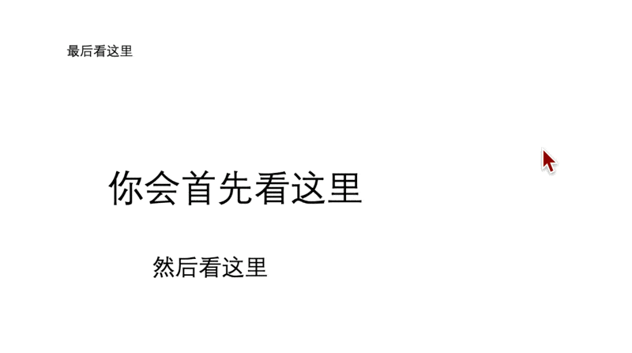

技术写作理论与方法#
很多从业者觉得理论“用处不大”，但事实上理论正是学科的精华——它把一类问题高度压缩，为我们提供预测与解释的工具。理论是一种有效工具，既能帮助预测事件的发展，也能解释其成因。
大家看一下这个图：
怎么样？有没有觉得很神奇？是不是我预测了你的阅读顺序？因为我学习过人的信息处理模型，知道我们的大脑会如何分配我们的注意力。一般来说，越大的字体会越容易吸引你的注意，因为我们潜意识中会把“更大”与“更重要”联系起来，是一种视觉隐喻。
从认知角度来看，自然界中体型越大的动物往往威胁越大，因而更值得我们关注。在人群中亦如此：身材高大者往往拥有体力优势，更可能对周围人造成压力或威胁。从进化的角度，我们自然会首先关注大的物体。
再看下方这个图，我一直在晃动鼠标，你的视线是否始终被它吸引？

这就是我们的注意力会最优先分配给运动的物体。也可以从进化的角度来解释，因为对于我们人类来说，运动的物体是最危险的，无论是山上滚下的石头，或者突然扑过来的动物，运动的物体是最危险的，也最先获得我们人类的关注。
注意力分配#
在人类的注意力系统中，资源有限是最根本的约束——工作记忆一次只能稳定地容纳大约 4 ± 1 个信息单元，超出这一阈值就会迅速触发遗忘或需要额外复述来维持；然而，这些资源并非完全共享在同一“池子”里，而是以多资源的方式按模态分区：语言通道和视觉通道可以在一定程度上并行运作，从而允许我们一边听指令一边看示意图，彼此相互缓冲认知负荷。即便如此，所有进入感知系统的刺激仍须参加一场实时的竞争赛——突显度高、与当前目标最相关或最具紧迫性的刺激会赢得“最高出价”，优先占据那屈指可数的注意配额；其余信息要么被压到背景，要么被干脆过滤。正是这三重机制共同塑造了我们对信息的选择、维持与转换方式，也解释了为何在设计技术文档时必须以“少而精、层次分明、图文并置”来引导读者有限而宝贵的注意力。
核心特征
资源有限：工作记忆容量≈ 4±1 项。
多资源：视觉-语言等不同模态可部分并行。
竞争赛：所有刺激实时竞价，权重最高者获配额。
阶段 |
关键机制 |
简要说明 |
触发因素 |
|---|---|---|---|
捕获（Capture） |
外源注意（Bottom-up） |
突然的运动、对比、大小、声音等显著特征在 150–200 ms 内自动抢占注意 |
物理显著度、突发事件 |
选择（Selection） |
过滤 / 赋权 |
对输入进行早期或晚期筛选，优先级取决于任务目标、相关性与工作记忆余量 |
目标匹配度、认知负荷 |
维持（Maintenance） |
中央执行系统 |
在语音环路、视觉草图板等子系统间动态分配有限资源，抑制干扰 |
内容难度、动机、警觉度 |
转移（Shifting） |
行为紧迫 / 机会-威胁模型 |
检测到更紧迫或更有价值的刺激时，腹侧注意网络触发重定向 |
突然运动、错误、奖励提示 |
对技术写作与信息设计的启示#
注意力原理 |
典型影响 |
写作 / 排版策略 |
|---|---|---|
显著度抢占 |
大字号、粗体、对比色、首句更先被扫视 |
- 使用 3 级以内字号层级；为关键术语加粗或着色，避免全屏“视觉噪声” |
双通道处理 |
图文并置可分担资源、降低负荷 |
- 让示意图、代码截图与文字同屏；配简短图注 |
有限容量 |
信息过载 → 跳读、放弃 |
- 分块 (chunking)、列表化、渐进披露；一步一屏的向导式流程 |
F-Pattern 扫视 |
左上 & 首行停留时间最长 |
- 把一句话结论放在段首；副标题+首句先给价值或任务 |
行为紧迫 |
错误/危险提示应立刻突出 |
- 使用弹窗/红色文本一次性动效 (<0.6 s)；避免循环闪烁 |
注意力疲劳 |
过多动画或强调会被“习得性忽视” |
- 只在首次关键步骤使用动效；长文中留足空白和“休止符” |
任务驱动 |
用户带着目标检索信息 |
- 以任务场景组织内容（Minimalism）；在标题/导航中直接写动作词 |
一致性降低搜索成本 |
预测准确 → 资源节省 |
- 采用统一术语、格式和图标；引用模板或受控语言规范 |
实用建议#
3 秒抓眼区：首段 1 句话 + 18 px 以上标题告诉读者“能做什么”。
一屏 ≤ 2 个重点强调：其余保持普通权重，避免“注意力稀释”。
图随文走：图与步骤相距 < 300 px；编号或锚点对应。
一步一动作：复杂流程拆成「步骤卡片」或「向导对话框」。
留白 = 呼吸：模块外至少留 1×正文字号的空隙；长篇每 3–4 屏插入小结。
动效只用于状态改变：加载完成、危险确认、成功反馈一次性出现即停止。
一致的微文案：按钮、标题、提示用同一动词-对象结构（Install-Package、Delete-User）。
检验：用 5 秒“眯眼测试”或眼动回放，看最先视线落点是否真在任务关键处。
技术文档工程师应该学习人因学知识#
整个技术写作，实际上是一个信息引导的过程，要能引导读者首先看哪里，然后看哪里，并了解读者会如何阅读，这样才能很好的完成技术写作，而非纯粹的语言修辞，事实上，语言修辞的惯例本身就受人类认知与行为规律制约。
感兴趣的读者可以尝试探索：
视觉加工
认知负荷理论
决策理论
心智模型